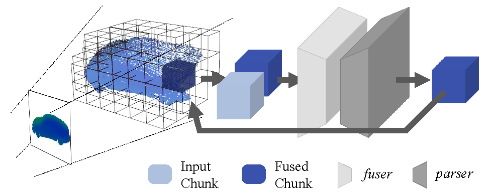
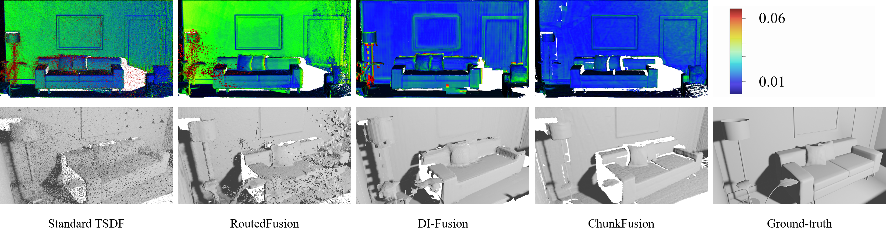
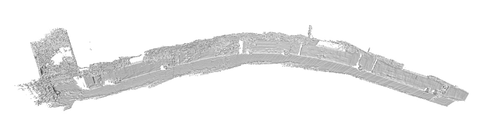

|
ChunkFusion: A learning-based 3D RGB-D Reconstruction Framework via Chunk-based Integration Chaozheng Guo1, Lin Zhang1, Ying Shen1, Yicong Zhou2 1 School of Software Engineering, Tongji University, Shanghai, China 2 Department of Computer and Information Science, University of Macau, Macau |
Introduction
This is the website for our paper "ChunkFusion: A learning-based 3D RGB-D Reconstruction Framework via Chunk-based Integration "
Recent years have witnessed a growing interest in online RGB-D 3D reconstruction. On the premise of ensuring the reconstruction accuracy with noisy depth scans, making the system scalable to various environments is still challenging. In this a paper, we devote our efforts to try to fill in this research gap by proposing a scalable and robust RGB-D reconstruction framework, namely ChunkFusion. In ChunkFusion, sparse voxel management is exploited to improve the scalability of online reconstruction. Besides, a chunk-based fusion network is designed to perform a robust integration of the noisy depth measurements on the sparsely allocated voxel chunks. The proposed chunk-based TSDF (truncated signed distance function) integration scheme can accurately restore surfaces with superior visual consistency from noisy depth maps and can guarantee the scalability of online reconstruction simultaneously, making our reconstruction framework widely applicable to scenes with various scales and depth scans with strong noises and outliers. The outstanding scalability and efficacy of our ChunkFusion have been corroborated by extensive experiments.
Reconstruction Result
Reconstruction result on ICL-NUIM dataset:
Reconstruction result on self-collected real-world data:
Source Codes
Use git to clone the repository:
git clone https://github.com/Goochaozheng/ChunkFusion.git
Follow the guide to run the demo.
Last update: Oct. 4, 2021